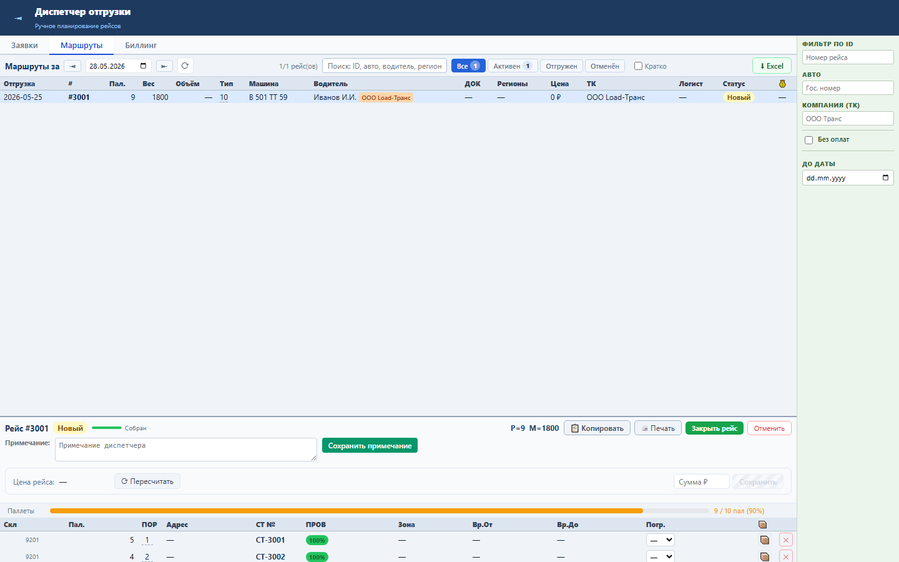

Блок показывает заполнение машины паллетами прямо в карточке рейса.
Значение берётся из суммы PALLETS_COUNT по СТ рейса, лимит — из RRL_TR_VEHICLE.PALLETS.
Диспетчер видит процент загрузки: зелёный до 85%, жёлтый 85–99%, красный при 100% и выше.

Проверка: functional, UI smoke и load gates пройдены.